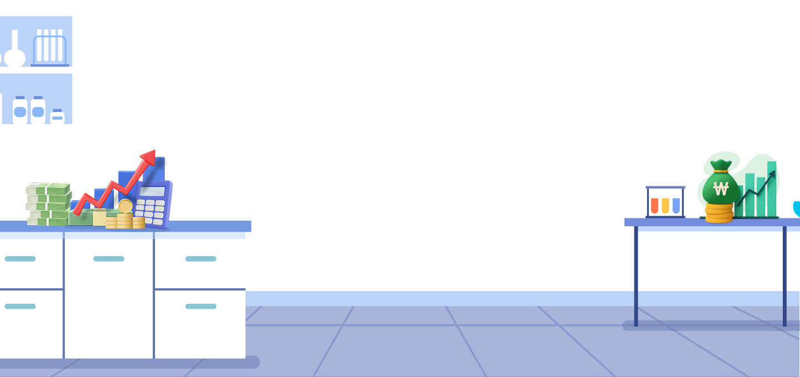

가설
물가가 상승하는 상황에서는 1만 원의 실질가치가 시간이 지날수록 하락할 것이다.(단, 다른 조건은 동일함)
가설을 어떻게 검증해야 할지 고민되시나요? 걱정하지 마세요.
활동 가이드를 따라 차근차근 진행하면 어렵지 않습니다.
자,
다음
을 클릭하여 가설을 검증하기 위한실험 활동 가이드를 확인해 보세요.
금융투자 실험실
심화 활동
다음
을 클릭하여 가설을 검증하기 위한